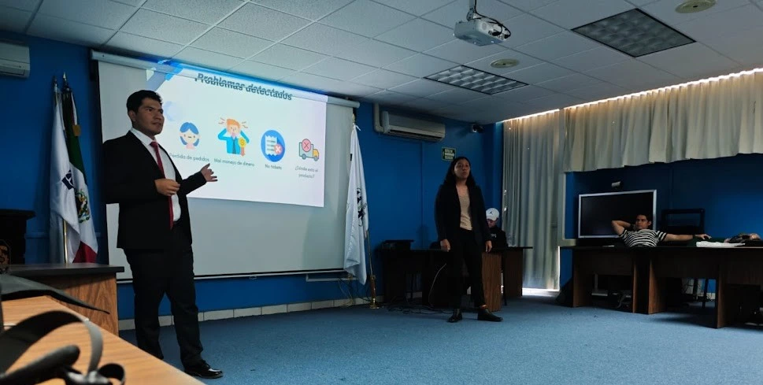

Vistazo rápido
Una interfaz clara para tu equipo
Estructura ligera con pantallas enfocadas en lo que importa: pedidos, inventario e historial.

Por qué nació
Historia
Florist Management surgió a partir de varios retos que enfrentaba la floristería como:
- Los pedidos se anotaban en libretas, y a veces se olvidaban.
- El inventario se controlaba de forma informal.
- No se llevaba un historial de ventas.
- No existían reportes para evaluar el desempeño del negocio.
Esto dificultaba la organización, la atención al cliente y la toma de decisiones basada en datos.
Descarga la presentación y mira el proceso completo.